Celestial: constellations
iau_andromeda
BEFORE (JPG) • 40.7 KB
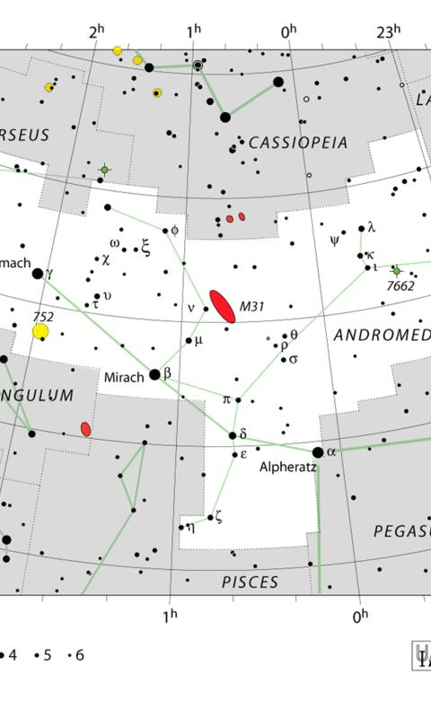
AFTER (WEBP) • 30.5 KB (-25.0%)
iau_aquarius
BEFORE (JPG) • 43.5 KB

AFTER (WEBP) • 33.3 KB (-23.3%)

iau_aquila
BEFORE (JPG) • 36.5 KB

AFTER (WEBP) • 25.8 KB (-29.1%)
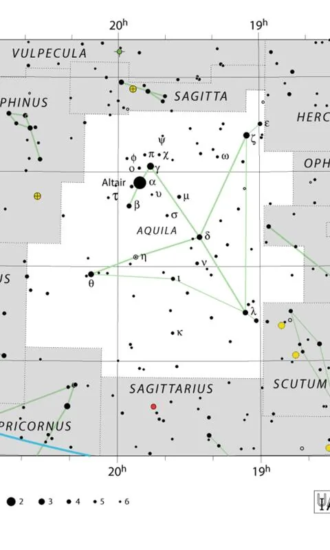
iau_aries
BEFORE (JPG) • 34.9 KB
AFTER (WEBP) • 25.2 KB (-27.6%)
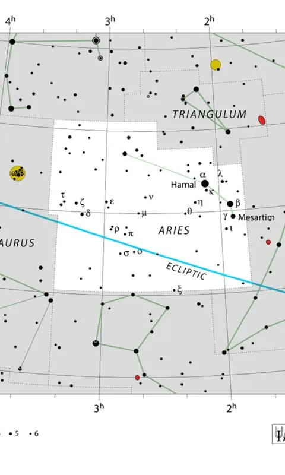
iau_auriga
BEFORE (JPG) • 38.6 KB

AFTER (WEBP) • 28.5 KB (-26.0%)
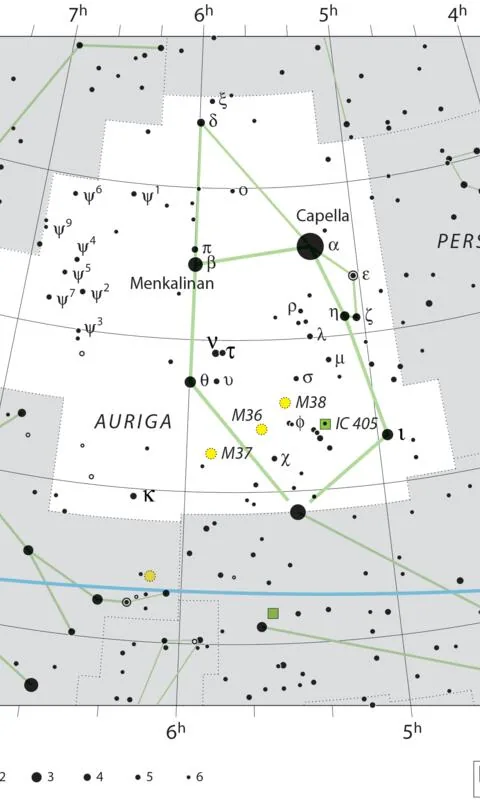
iau_bootes
BEFORE (JPG) • 40.2 KB

AFTER (WEBP) • 31.1 KB (-22.8%)
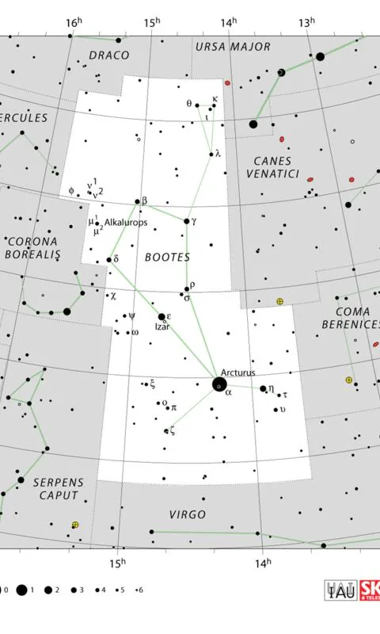
iau_cancer
BEFORE (JPG) • 36.4 KB

AFTER (WEBP) • 27.3 KB (-25.0%)
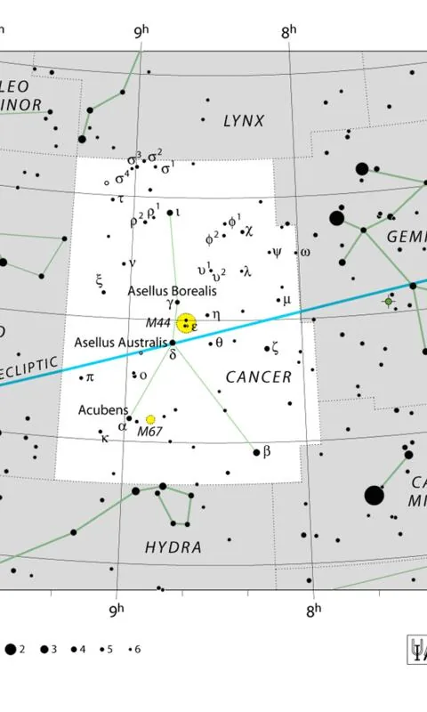
iau_canis_major
BEFORE (JPG) • 42.2 KB

AFTER (WEBP) • 31.7 KB (-24.9%)

iau_canis_minor
BEFORE (JPG) • 29.0 KB

AFTER (WEBP) • 19.6 KB (-32.2%)
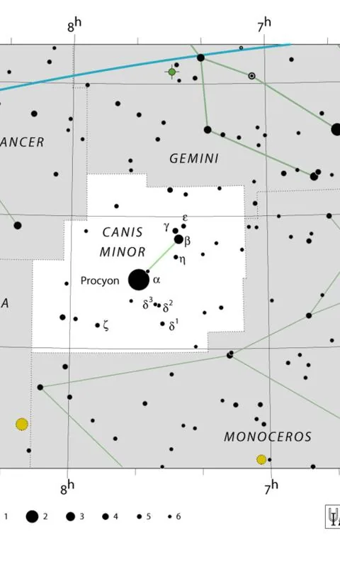
iau_capricornus
BEFORE (JPG) • 37.2 KB

AFTER (WEBP) • 27.5 KB (-26.0%)

iau_carina
BEFORE (JPG) • 50.3 KB

AFTER (WEBP) • 39.7 KB (-21.1%)
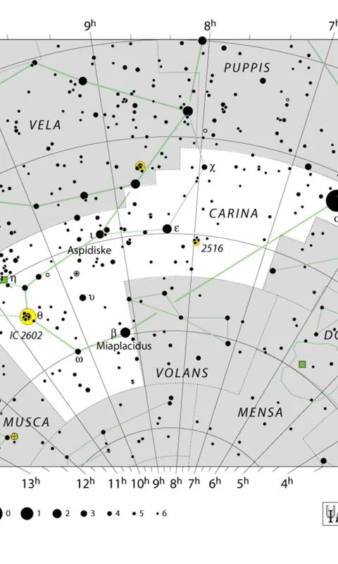
iau_cassiopeia
BEFORE (JPG) • 44.8 KB
AFTER (WEBP) • 34.0 KB (-24.0%)
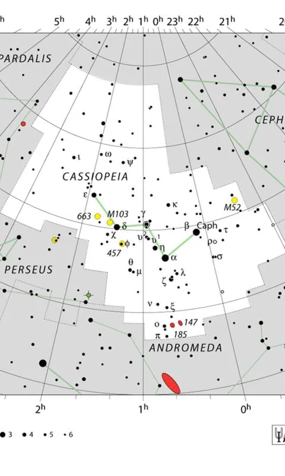
iau_centaurus
BEFORE (JPG) • 53.0 KB

AFTER (WEBP) • 42.0 KB (-20.7%)

iau_cepheus
BEFORE (JPG) • 53.3 KB

AFTER (WEBP) • 42.9 KB (-19.5%)

iau_cetus
BEFORE (JPG) • 37.2 KB

AFTER (WEBP) • 27.5 KB (-26.1%)

iau_corona_borealis
BEFORE (JPG) • 29.3 KB

AFTER (WEBP) • 20.4 KB (-30.4%)

iau_corvus
BEFORE (JPG) • 22.9 KB

AFTER (WEBP) • 15.3 KB (-33.2%)
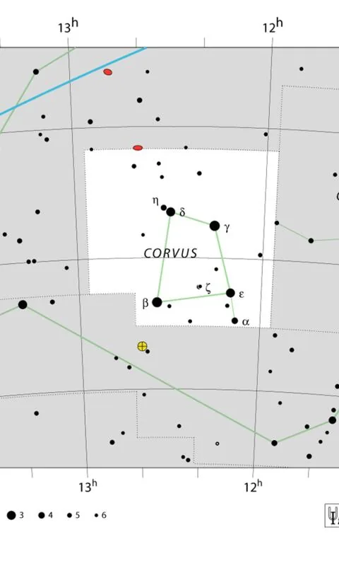
iau_crux
BEFORE (JPG) • 39.1 KB
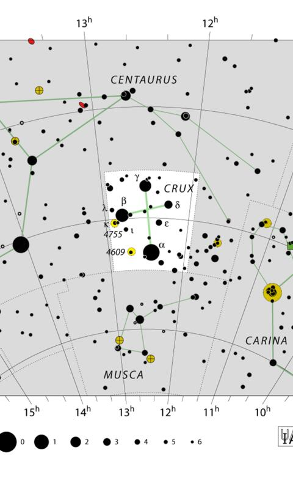
AFTER (WEBP) • 29.3 KB (-25.0%)
iau_cygnus
BEFORE (JPG) • 49.7 KB

AFTER (WEBP) • 39.4 KB (-20.7%)
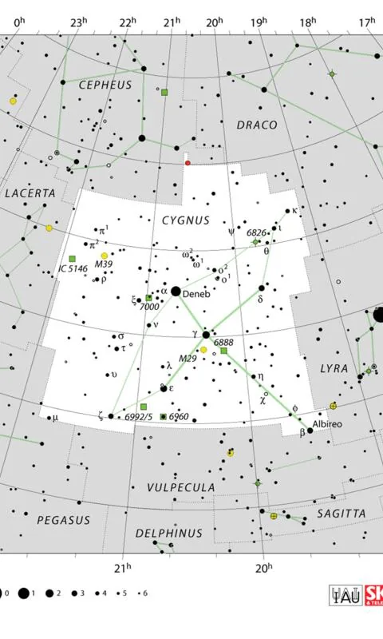
iau_delphinus
BEFORE (JPG) • 27.7 KB

AFTER (WEBP) • 18.8 KB (-32.0%)

iau_draco
BEFORE (JPG) • 52.1 KB
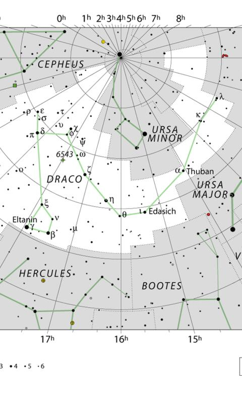
AFTER (WEBP) • 40.5 KB (-22.2%)

iau_eridanus
BEFORE (JPG) • 49.7 KB
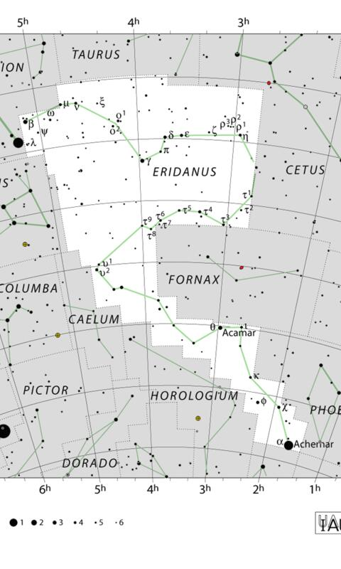
AFTER (WEBP) • 39.9 KB (-19.8%)

iau_gemini
BEFORE (JPG) • 39.6 KB

AFTER (WEBP) • 29.3 KB (-26.0%)

iau_grus
BEFORE (JPG) • 37.1 KB

AFTER (WEBP) • 28.1 KB (-24.3%)

iau_hercules
BEFORE (JPG) • 40.7 KB

AFTER (WEBP) • 30.4 KB (-25.3%)

iau_hydra
BEFORE (JPG) • 43.2 KB

AFTER (WEBP) • 32.0 KB (-26.0%)
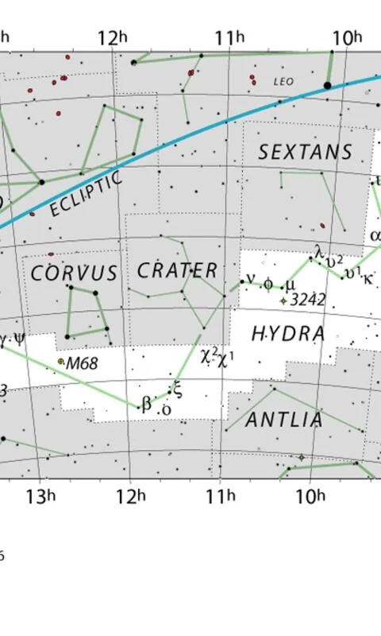
iau_leo
BEFORE (JPG) • 38.7 KB

AFTER (WEBP) • 28.2 KB (-27.1%)
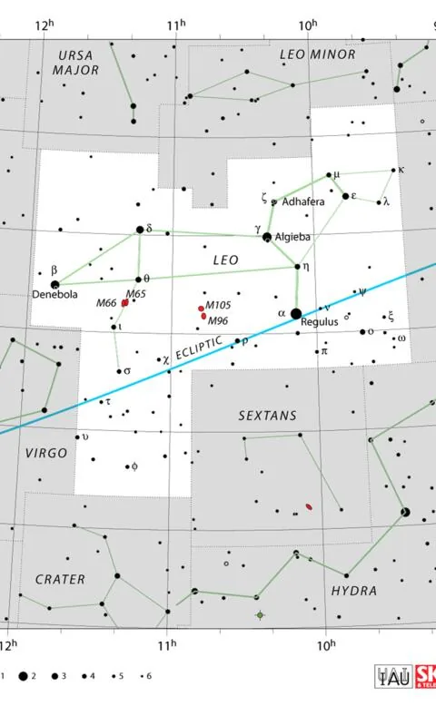
iau_lepus
BEFORE (JPG) • 31.7 KB

AFTER (WEBP) • 22.2 KB (-30.1%)

iau_libra
BEFORE (JPG) • 37.6 KB

AFTER (WEBP) • 28.2 KB (-25.0%)
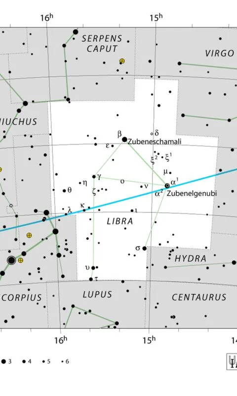
iau_lyra
BEFORE (JPG) • 30.3 KB
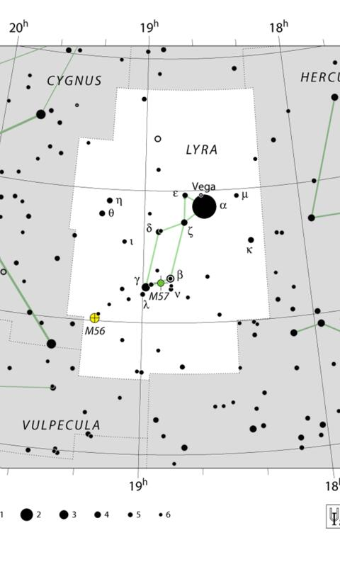
AFTER (WEBP) • 21.0 KB (-30.9%)
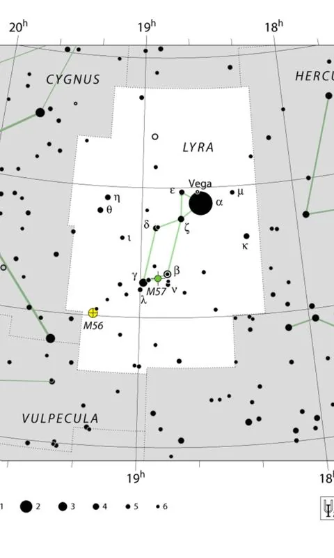
iau_monoceros
BEFORE (JPG) • 37.1 KB
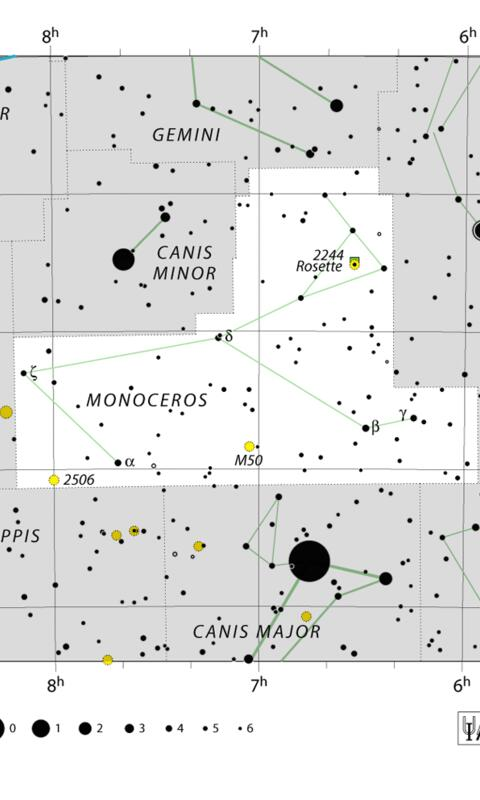
AFTER (WEBP) • 26.4 KB (-28.8%)
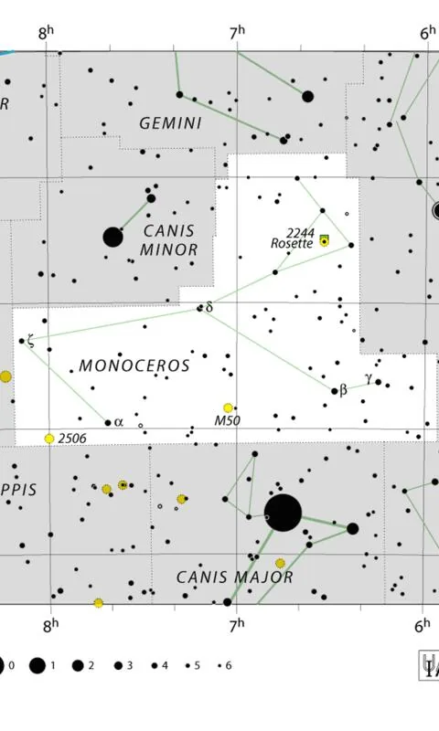
iau_ophiuchus
BEFORE (JPG) • 45.0 KB

AFTER (WEBP) • 34.5 KB (-23.3%)

iau_orion
BEFORE (JPG) • 49.2 KB

AFTER (WEBP) • 37.1 KB (-24.6%)
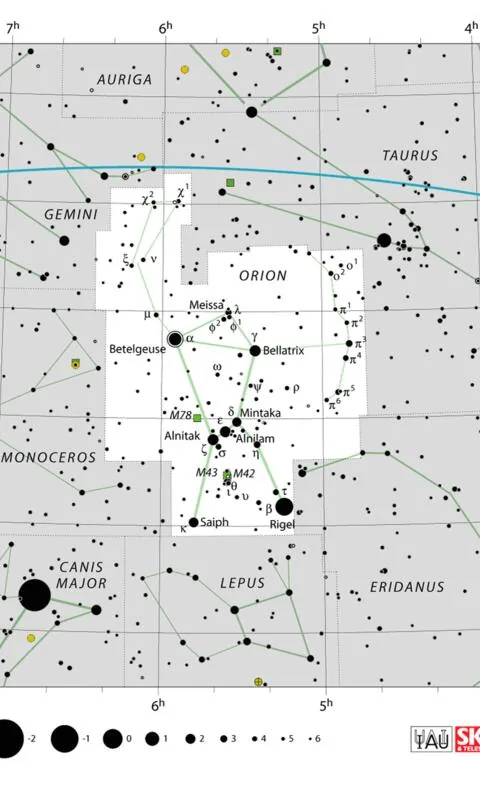
iau_pavo
BEFORE (JPG) • 43.8 KB

AFTER (WEBP) • 34.7 KB (-20.8%)

iau_pegasus
BEFORE (JPG) • 43.2 KB

AFTER (WEBP) • 33.0 KB (-23.5%)
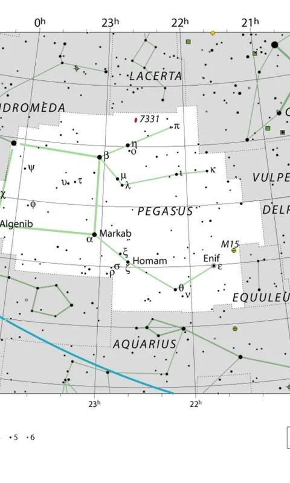
iau_perseus
BEFORE (JPG) • 40.9 KB

AFTER (WEBP) • 31.6 KB (-22.5%)

iau_phoenix
BEFORE (JPG) • 36.7 KB
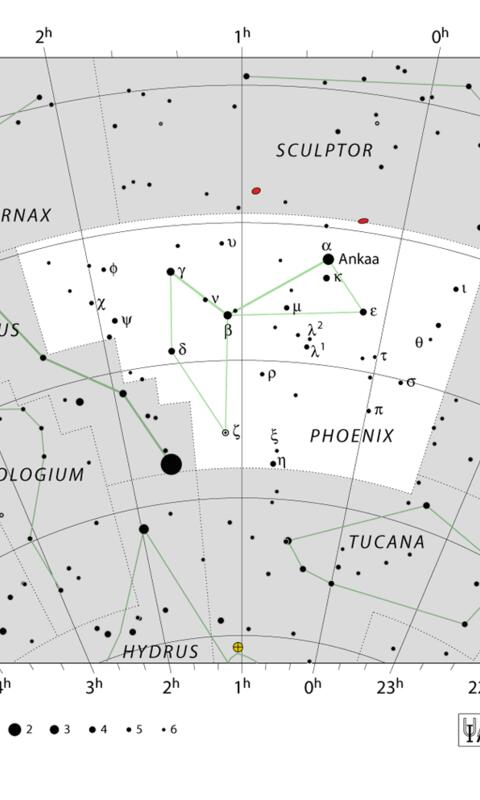
AFTER (WEBP) • 27.3 KB (-25.7%)

iau_pisces
BEFORE (JPG) • 42.8 KB

AFTER (WEBP) • 32.3 KB (-24.4%)
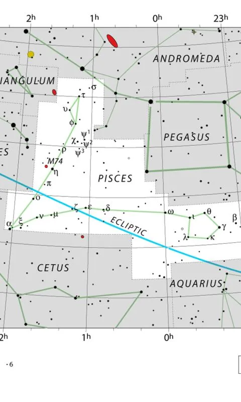
iau_puppis
BEFORE (JPG) • 47.9 KB

AFTER (WEBP) • 37.0 KB (-22.8%)

iau_sagitta
BEFORE (JPG) • 30.2 KB

AFTER (WEBP) • 21.3 KB (-29.6%)
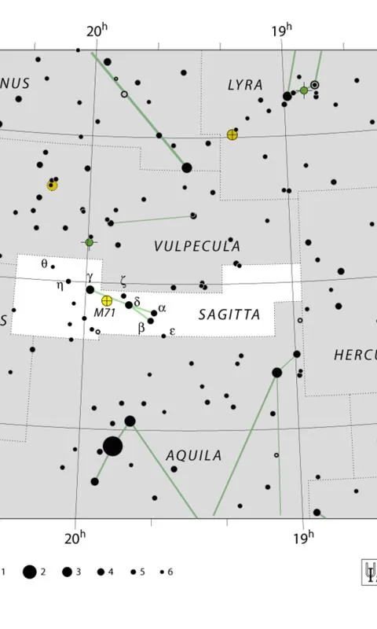
iau_sagittarius
BEFORE (JPG) • 49.8 KB

AFTER (WEBP) • 40.0 KB (-19.7%)
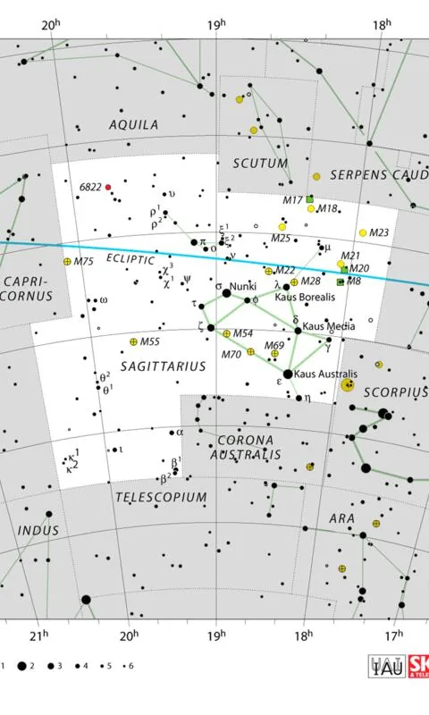
iau_scorpius
BEFORE (JPG) • 48.9 KB
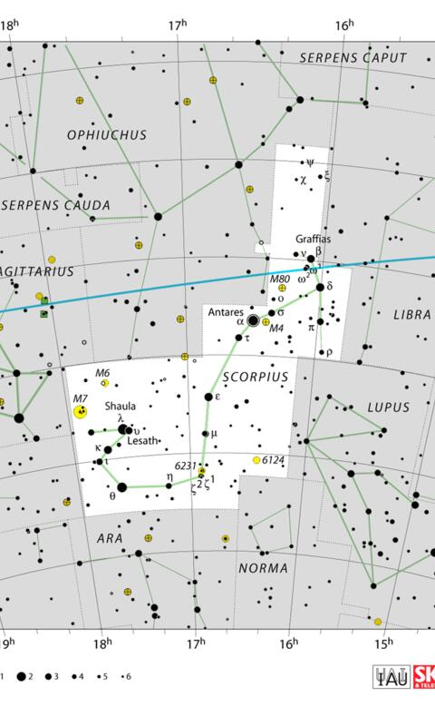
AFTER (WEBP) • 39.1 KB (-20.2%)
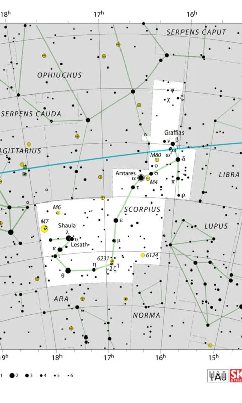
iau_taurus
BEFORE (JPG) • 39.9 KB

AFTER (WEBP) • 29.3 KB (-26.4%)

iau_triangulum
BEFORE (JPG) • 28.6 KB

AFTER (WEBP) • 19.7 KB (-31.3%)
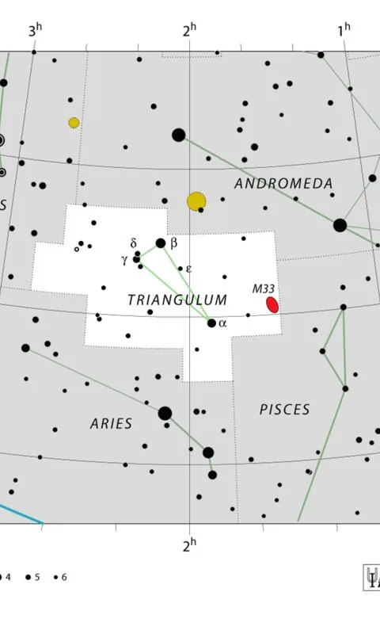
iau_ursa_major
BEFORE (JPG) • 50.6 KB

AFTER (WEBP) • 39.8 KB (-21.2%)
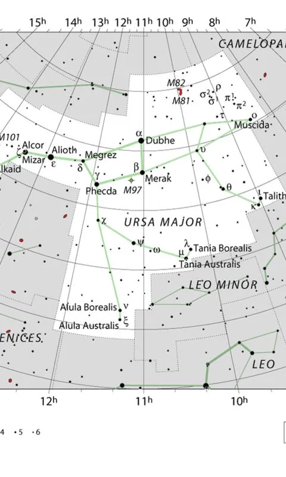
iau_ursa_minor
BEFORE (JPG) • 43.1 KB

AFTER (WEBP) • 33.1 KB (-23.1%)

iau_vela
BEFORE (JPG) • 43.5 KB
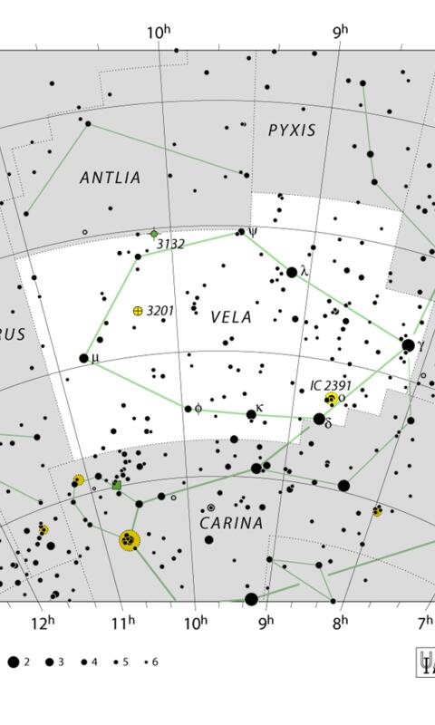
AFTER (WEBP) • 32.6 KB (-25.0%)

iau_virgo
BEFORE (JPG) • 36.3 KB

AFTER (WEBP) • 25.4 KB (-30.1%)
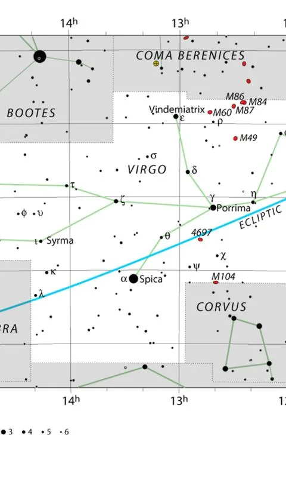